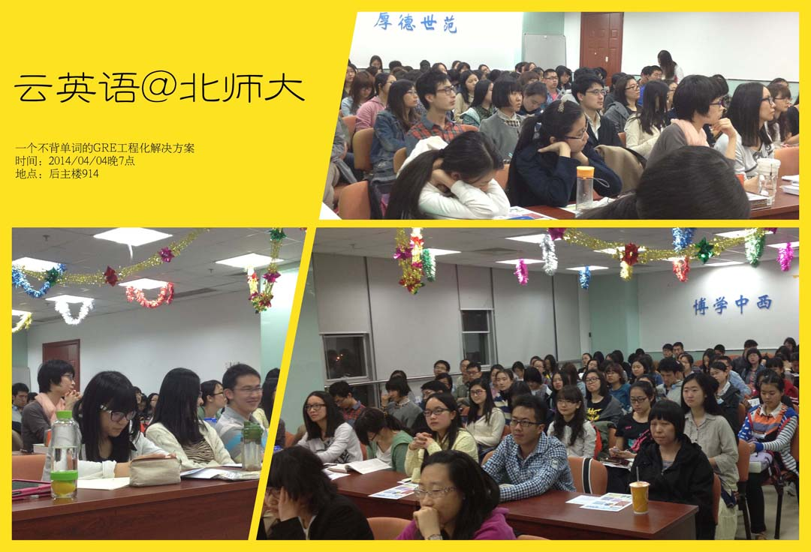
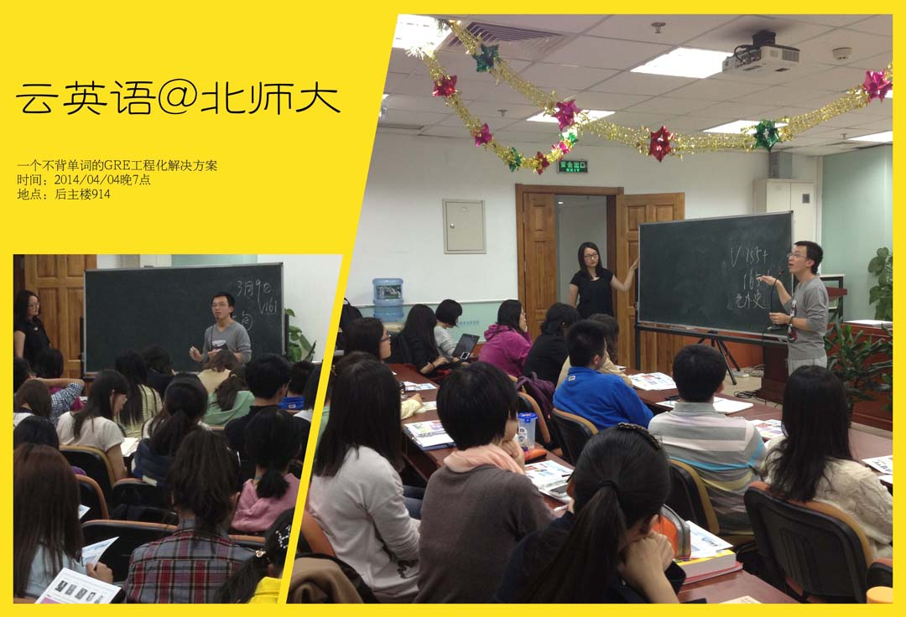
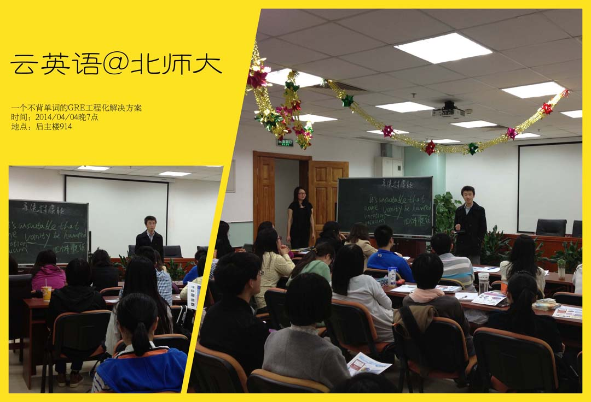
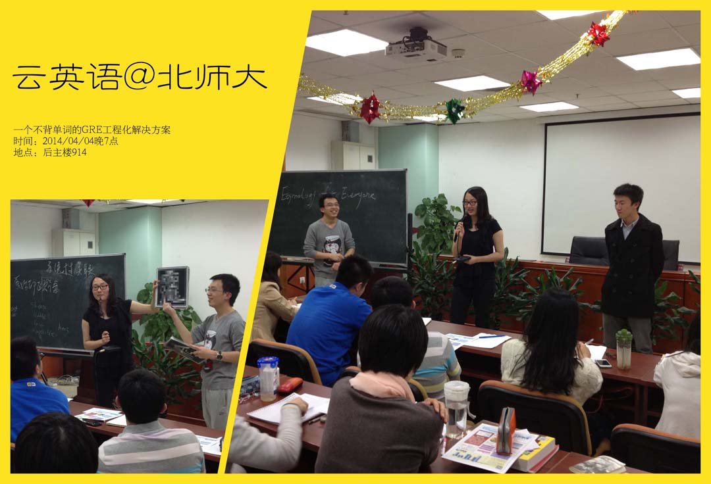
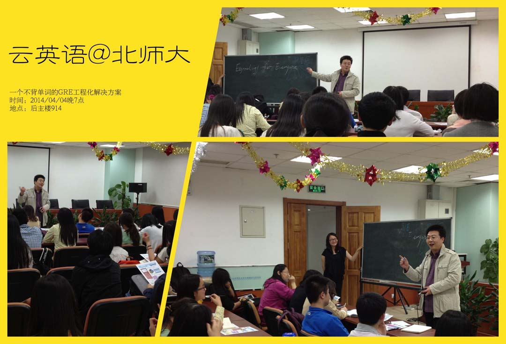

云英语
云英语：因学术而改变

2014年4月4日晚7点，云英语团队来到北京师范大学，在北师大后主楼914，举行了题为《一个不背单词的GRE工程化解决方案》的重磅讲座。本次讲座是云英语词汇建造师走进北师大系列活动之第一场，受到了北师大同学的热烈欢迎，讲座现场座无虚席。
 （图为北京师范大学云英语讲座现场）本次讲座的主讲老师是云英语Y-GRE技术组组长曹子聪。曹子聪老师是云英语早期学员（VB-A-002期荣誉毕业），毕业于北京大学中文系，目前从事Y-GRE的干预和研发工作。曹子聪老师每年要参加5次GRE考试，最近一次的Verbal成绩是168分。他擅长根据研修者不同的具体情况设计高效的备考方案。他曾经屡次在10-15天的时间框架内把申请者的Verbal成绩从140+提高到155-160，挽救了无数在绝望中濒临deadline的同学，使他们最终绝地反击，拿到了常青藤学校的全奖offer。
本次讲座还邀请到了大陆首个新GRE满分获得者黄笛。黄笛是北京大学2008级物理转2009级哲学本科生，2013级哲学系硕士研究生。曾经参加云英语VB-A-005期和Y-GRE-002期研修。在2013年3月9日新GRE北外考场，黄笛创造的240小时达成Verbal满分170的记录，至今未被打破。
当然，最荣幸的是，在开场后1个小时，云英语的创始人李浩博士（Cand.）也来到了讲座现场，与同学们分享了他主持开发VB和Y-GRE两款学术产品的初衷和云英语未来的发展方向。
讲座伊始，曹子聪老师首先为同学们讲解了新GRE考试改革的基本情况和发展趋势。自从2011年新GRE改革取消类反以来，传统培训机构笃行了十余年的刷红宝背答案的鲁莽应试方式已经再也无法为继。相应地，大陆地区考生的Verbal成绩大幅下滑，低于全球平均大约5分。ETS通过命题和计分改革，进一步加强了GRE成绩反映考生学术和能力水平的有效性，其根本目的是在提升GRE考试在全球的权威性和适用性。这一系列措施的最终导向，就是使得ETS终于能够在与以Kaplan为首的各家培训机构之间持续数十年的博弈中占据上峰，使得无数寄希望于短期提升GRE成绩的申请者最终折戟。
云英语的Y-GRE就是在这样一种历史大背景下诞生的。Y-GRE在深入分析用户需求的基础上，依托云英语强大的语言教学研发平台，建立起工程化的系统性GRE备考解决方案，已经帮助数以千计的申请者在30天的时间框架内达成V155+ Q 168的目标分数。
随后，曹子聪老师又针对GRE以及其他英语考试备考过程中普遍存在的单词记忆困难的千古难题问题，分享了自己当年的体验和云英语技术研发的根本出发点。背单词原本就是伪命题，以i+1模式在新知和已知之间建立可复现的系统性关联才是唯一可行的认知模式。基于这个原因，通过基于比较语言学视角的同源体系来构件学术阅读词汇体系就成为了必然。一切成人学术型语言教学的核心必须从此出发。在讲解过程中，曹子聪老师忽而拉丁，忽而希腊，最终却又总是能落回英文的理解本身。整个讲座条理清晰、案例充足、内容详实，令人受益匪浅，现场掌声笑声不断。
 （图为云英语Y-GRE技术组组长曹子聪老师为大家讲解新GRE分数标准）与曹子聪老师相比，黄笛则主要侧重于自己当年GRE备考和获得满分的感悟。黄笛认为，新GRE考察的是我们用英语作为媒介进行分析性阅读和写作的能力，而这不是突击背记单词、学习考试技巧能够提升的。以有效的方式准备GRE，其实是对学术英文的很好训练――这既是对待GRE的最合理的方式，而能令人在这个过程中受益良多。
黄笛学长条分缕析，思路严谨，言语中满是诚恳的劝诫，没有丝毫的炫耀。他与在场同学分享自己经验时说：拿到verbal满分，其实是一件非常偶然和幸运的事情。如果想在GRE这种学术能力测验（而非语言能力测验）中取得理想成绩，就必须以非常严格和学术的方式来对待备考过程。
 （图为大陆首个新GRE满分黄笛跟大家分享他当年的备考经验）  （图为曹子聪和黄笛与大家互动沟通，解答有关GRE备考和词源学习的疑问）最后，讲座隆重请出了特邀嘉宾，原北医三院骨科医生、云英语创始人、外研社30周年荣誉作者李浩老师。李浩老师分享了他的创业历程，解释了"云英语"命名的由来，并为大家讲解了两大学术产品――词汇建造师VB和Y-GRE平台的前世今生。李浩老师一贯的风趣幽默，赢得了在场观众的掌声如潮。
晚上九点，虽然讲座在一片欢笑中划上了句号，但很多同学仍然久久不愿离去。PIE、比较语言学、etymology…这些从未听过的术语，以及通过科学的方法构建学术阅读词汇体系的可能，无不激起在场听者巨大的兴趣。按李浩老师所说，一个好产品的研发过程可能是异常艰辛，但对于受众来讲却只有输出结果这么简单！VB和Y-GRE在现阶段虽然不能做到尽善尽美，英语学习之殇也远非一两场讲座可以解决，但是――我们会一直努力！
 图为云英语创始人李浩老师在讲解VB和Y-GRE产品的由来版权所有 2011-2015 云英语 Y-English All Rights Reserved
地址：北京市海淀区五道口华清嘉园商务会馆802
电话：400-876-3898 010-82863898 82863899 传真：010-82863897